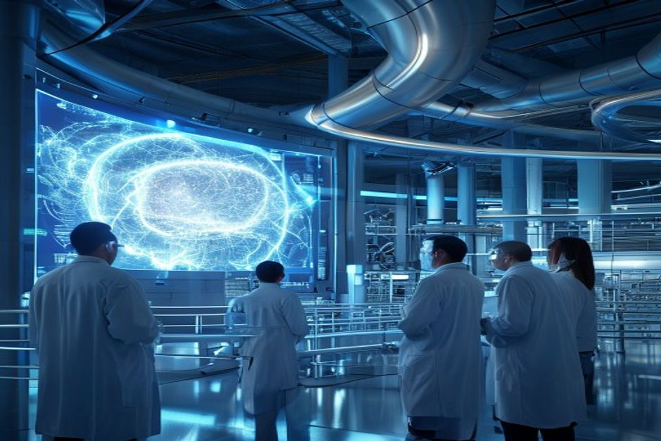
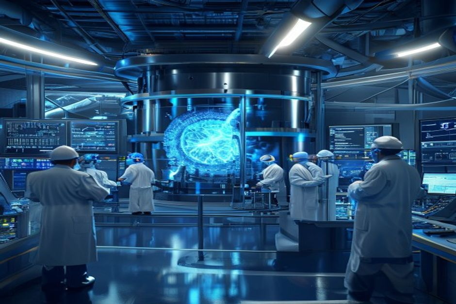

Nuclear fusion has long been hailed as the holy grail of clean energy—limitless, safe, and carbon-free. Recent breakthroughs, including LLNL's ignition achievement and a surge in private funding to nearly $10 billion, have fueled optimism that commercial fusion is just around the corner. However, a deep dive into the evidence reveals a more sobering picture: the hardest engineering problems remain unsolved, government funding is plateauing, and even the most aggressive timelines push grid-connected electricity beyond 2045. For energy investors, corporate strategists, and policy makers, the question is not whether fusion will eventually work, but whether it can compete with rapidly falling renewables and natural gas within a relevant investment horizon. This report examines the technology readiness, economic viability, market dynamics, and strategic implications to answer that question.
The Hard Engineering Limits That Push Commercial Viability Beyond 2045
Despite dramatic scientific progress, the path to a working fusion power plant is blocked by three intractable engineering challenges: materials that can withstand neutron bombardment, a self-sustaining tritium fuel cycle, and efficient heat extraction.
In December 2022, Lawrence Livermore National Laboratory achieved fusion ignition, delivering 2.05 MJ of laser energy to produce 3.15 MJ of fusion output—a scientific milestone 60 years in the making. Yet this experiment was a single-shot event, not a sustained power source. The leap from a laboratory demonstration to a continuous, grid-connected reactor requires solving problems that have defied engineers for decades.
The first challenge is materials. In a fusion reactor, the inner walls must withstand an intense flux of high-energy neutrons that can displace atoms, create helium bubbles, and embrittle structural alloys. Current materials, such as reduced-activation ferritic-martensitic steels, are projected to last only a few years under fusion conditions—far short of the 30-40 year plant lifetime needed for economic viability. The DOE's Fusion Energy Sciences program has identified structural materials as one of six core challenge areas, but no breakthrough has been publicly reported.
The second challenge is tritium breeding. Fusion reactors require tritium as fuel, but tritium is scarce and radioactive. A commercial plant must breed its own tritium by surrounding the plasma with a lithium-containing blanket that captures neutrons to produce tritium. The required tritium breeding ratio (TBR) must exceed 1.0 to sustain the reaction. Peer-reviewed studies indicate that achieving a TBR >1.0 in a practical blanket design remains unproven, with many designs falling short. The DOE has initiated design of an Integrated Blanket and Fuel Cycle Test Facility, but it is still in early stages.
The third challenge is heat extraction. Fusion plasmas operate at temperatures exceeding 100 million °C, and the heat flux on the divertor—the component that exhausts waste heat—can reach 10 MW/m², comparable to the surface of the sun. No existing material can handle such conditions for extended periods. Advanced concepts like liquid metal divertors are being explored, but they add complexity and risk.
These engineering hurdles are why the National Academies' 2021 report on a U.S. fusion pilot plant recommended a schedule of 2035-2040 for first operation, and even that was described as 'aggressive.' The DOE's own Fusion Science and Technology Roadmap, released in 2025, targets commercial fusion by the mid-2030s, but it explicitly states that this timeline is contingent on future public-private partnerships and funding that has not yet been appropriated.
Counter-evidence: Some private companies, such as Commonwealth Fusion Systems and Helion Energy, claim they can achieve net electricity generation by the early 2030s. Commonwealth Fusion's SPARC tokamak is designed to demonstrate net energy gain by 2025-2026, and Helion has announced plans to deliver electricity to Microsoft by 2028. However, these timelines have slipped repeatedly, and independent experts remain skeptical. The Fusion Industry Association's 2024 report noted that while private investment is growing, the number of companies with credible pilot plant designs remains small.
- LLNL's 2022 ignition experiment produced 3.15 MJ from 2.05 MJ input, but was a single-shot event, not a sustained reaction
- The DOE's FY 2027 budget request for Fusion Energy Sciences is $755.3 million, a decrease of $50.4 million from FY 2026, with cuts to core research
- The National Academies' pilot plant roadmap targets 2035-2040 for first operation, calling it 'aggressive.'
- The DOE's Fusion Science and Technology Roadmap identifies six core challenge areas, including structural materials and the fuel cycle, with no publicly reported breakthroughs
The executive case should start with the few numbers the public record can support
Each headline metric is traceable to a retained public source sentence.
Evidence: E10, E1, E2. Sources: energy.gov.
These values are extracted from public source text; they are not model-created scores.
Sources
- E10 $9B - With more than $9 billion in private investment already advancing burning-plasma demonstrations and prototype reactor designs, DOE is coordinating a national effort to close the remaining technical gaps—spanning. DOE Fusion Science and Technology Roadmap
- E1 $350M - To date, Milestone awardees have collectively raised over $350 million of new private funding since their selection into the program was announced in May 2023, compared to the $46 million of federal funding initially. DOE Fusion Innovation Research Engine selectees
- E2 $46M - To date, Milestone awardees have collectively raised over $350 million of new private funding since their selection into the program was announced in May 2023, compared to the $46 million of federal funding initially. DOE Fusion Innovation Research Engine selectees
The $5 Billion Question: Private Investment Is Surging, But Is It Enough?
Private fusion investment has grown from virtually nothing in 2015 to over $9 billion cumulatively by 2025, but government funding is declining, and the capital required to build a commercial plant is orders of magnitude larger.

The fusion industry has attracted remarkable private capital. According to the Fusion Industry Association, cumulative private investment reached $7.1 billion in 2024 and surpassed $9 billion in 2025, with over $2.5 billion raised in the last 12 months alone. Notable deals include $100 million for Xcimer, $90 million for SHINE, and $65 million for Helion. This surge reflects growing investor confidence, but it also raises a critical question: is it enough to bridge the 'valley of death' between pilot plants and commercial deployment?
To put the numbers in perspective, a single commercial fusion power plant is estimated to cost between $5 billion and $10 billion—comparable to a large nuclear fission plant. The total private investment to date is barely enough to fund one plant. Moreover, the capital required to build a fleet of fusion plants that could meaningfully impact the grid would run into the hundreds of billions.
Government funding, meanwhile, is not keeping pace. The DOE's Fusion Energy Sciences budget request for FY 2027 is $755.3 million, a decrease of $50.4 million from FY 2026. While the Milestone-Based Fusion Development Program has authorized $415 million through FY 2027, only $46 million has been obligated so far. The program's structure requires private companies to provide more than 50% of the cost, which leverages private capital but also limits the scale of government support.
The contrast with other energy technologies is instructive. Solar and wind benefited from decades of sustained government R&D, tax credits, and deployment mandates that totaled hundreds of billions of dollars globally. Fusion, by comparison, is still in the early R&D phase, and the funding trajectory is uncertain. The DOE's own roadmap acknowledges that its ability to support commercialization is 'contingent on the development of future public-private partnerships' and future appropriations.
Counter-evidence: Proponents argue that private investment is accelerating and that the Milestone Program's leverage ratio—$350 million in private funding against $46 million in federal funding—demonstrates strong market confidence. They also point to the CHIPS and Science Act's $415 million authorization as a sign of political commitment. However, the declining FES budget suggests that fusion is not a top priority for Congress, and the $415 million is a fraction of what is needed.
- Cumulative private fusion investment exceeded $9 billion in 2025, with $2.5 billion raised in the last 12 months (FIA 2025 report)
- The DOE's FY 2027 FES budget request is $755.3 million, down $50.4 million from FY 2026
- The Milestone Program has authorized $415 million through FY 2027, but only $46 million has been obligated so far
- Milestone awardees have raised over $350 million in private funding since May 2023, compared to $46 million in federal funding
Dated funding signals show whether capital formation is accelerating
A dated view separates near-term appropriations and program authorizations from older launch milestones.
Evidence: E1, E3. Sources: energy.gov.
Only dated values with the same normalized unit ($M) are connected; the line is not a forecast unless the cited source states a forecast year.
Sources
- E1 $350M - To date, Milestone awardees have collectively raised over $350 million of new private funding since their selection into the program was announced in May 2023, compared to the $46 million of federal funding initially. DOE Fusion Innovation Research Engine selectees
- E3 $755.3M - Highlights of the FY 2027 Request The FES FY 2027 Request of $755.3 million is a decrease of $50.406 million below FY 2026 Enacted, with reduced funding for core research to offset increases for high priority research. DOE FY 2027 Fusion Energy Sciences budget request
Grid Parity or Pipe Dream: LCOE Projections Show Fusion May Never Beat Solar+Storage
Even if fusion works technically, its levelized cost of electricity (LCOE) is projected to be $50-100/MWh by 2050, while solar-plus-storage is already below $50/MWh and falling. Fusion's economic case is weak.
The ultimate test of fusion's commercial viability is its levelized cost of electricity (LCOE). Independent studies and fusion developer projections suggest that first-of-a-kind fusion plants could have LCOEs of $100-150/MWh, falling to $50-100/MWh by 2050 as the technology matures. In contrast, solar PV and onshore wind already have LCOEs of $30-60/MWh, and solar-plus-storage is projected to reach $30-50/MWh by 2030.
Fusion's cost disadvantage stems from its high capital costs. A fusion plant is expected to cost $5-10 billion for a 500 MW to 1 GW facility, resulting in capital costs of $5,000-10,000 per kW. This is comparable to nuclear fission but far higher than solar ($1,000/kW) or wind ($1,500/kW). Even with a high capacity factor (90% vs. 20-30% for solar), fusion's capital intensity makes it difficult to compete.
Moreover, fusion's LCOE projections are highly uncertain. They depend on assumptions about plant lifetime (30-40 years), capacity factor (90%+), and operations and maintenance costs, none of which have been demonstrated. The DOE's Fusion Energy Sciences program has not published official LCOE targets, and most projections come from developers with a vested interest in optimistic outcomes.
The comparison with natural gas is even starker. Natural gas combined-cycle plants have LCOEs of $40-60/MWh and can be built in 2-3 years for $1,000-1,500/kW. Fusion plants would take 10-15 years to build, exposing investors to construction risk and cost overruns. In a world where renewables are already the cheapest source of new electricity, fusion's value proposition is limited to baseload power and grid reliability—but even there, nuclear fission and geothermal offer proven alternatives.
Counter-evidence: Fusion advocates argue that its high capacity factor (90%+) and zero fuel costs could make it competitive in markets with high carbon prices or where renewables face intermittency challenges. They also point to potential cost reductions through learning curves and mass production. However, these arguments are speculative. The only way to know fusion's true cost is to build a plant, and that is at least a decade away.
- Solar PV LCOE is currently $30-60/MWh and falling; solar-plus-storage is projected at $30-50/MWh by 2030 (Lazard, IEA)
- Fusion LCOE projections from independent studies range from $50-100/MWh by 2050, with first-of-a-kind plants at $100-150/MWh
- Fusion capital costs are estimated at $5,000-10,000/kW, compared to $1,000/kW for solar and $1,500/kW for wind
- Natural gas combined-cycle LCOE is $40-60/MWh with 2-3 year construction timelines
Funding signals show when public-private capital commitments become visible
Dated dollar figures show where commitment has moved from ambition into named programs or follow-on capital.
Evidence: E2, E1, E4, E7, E3. Sources: energy.gov.
Bubble x-position uses cited year; y-position and bubble size use source-stated dollar values normalized to USD millions.
Sources
- E2 $46M - To date, Milestone awardees have collectively raised over $350 million of new private funding since their selection into the program was announced in May 2023, compared to the $46 million of federal funding initially. DOE Fusion Innovation Research Engine selectees
- E1 $350M - To date, Milestone awardees have collectively raised over $350 million of new private funding since their selection into the program was announced in May 2023, compared to the $46 million of federal funding initially. DOE Fusion Innovation Research Engine selectees
- E4 $50.4M - Highlights of the FY 2027 Request The FES FY 2027 Request of $755.3 million is a decrease of $50.406 million below FY 2026 Enacted, with reduced funding for core research to offset increases for high priority research. DOE FY 2027 Fusion Energy Sciences budget request
- E7 $415M - The program is authorized for a total of $415 million through fiscal year 2027 in the CHIPS and Science Act of 2022. DOE Fusion Innovation Research Engine selectees
- E3 $755.3M - Highlights of the FY 2027 Request The FES FY 2027 Request of $755.3 million is a decrease of $50.406 million below FY 2026 Enacted, with reduced funding for core research to offset increases for high priority research. DOE FY 2027 Fusion Energy Sciences budget request
Strategic Implications: Why Incumbents Should Watch Fusion but Not Bet the Farm
Fusion's impact on energy security, geopolitics, and incumbent sectors will be limited for at least two decades, but early movers in regulation and supply chains could gain an edge.

For energy incumbents—utilities, oil and gas companies, and nuclear operators—fusion represents both a threat and an opportunity. The threat is that fusion could eventually disrupt existing business models, particularly if it achieves cost parity with fossil fuels. However, that disruption is at least 20 years away, giving incumbents time to adapt.
The more immediate strategic implication is geopolitical. Countries that lead in fusion technology—the United States, China, the United Kingdom, and Japan—could gain energy independence and export advantages. China's CFETR program and the UK's STEP program are both targeting pilot plants by 2040, and both are backed by significant government funding. The U.S. DOE's Fusion Science and Technology Roadmap aims to maintain American leadership, but the declining budget raises questions about commitment.
For utilities, the key question is how to plan for a future that may include fusion. The most prudent approach is to invest in flexible, low-carbon generation (renewables, storage, and natural gas with carbon capture) that can be adapted as fusion matures. Utilities should also engage with regulatory bodies to ensure that fusion licensing frameworks are developed in a way that does not create barriers to entry.
For oil and gas companies, fusion is a long-duration hedge. Several majors, including Chevron and Equinor, have invested in fusion startups, but these investments are small relative to their balance sheets. The real opportunity may lie in supplying materials and engineering services to the fusion industry, rather than becoming fusion operators themselves.
Counter-evidence: Some analysts argue that fusion could be a 'black swan' that arrives faster than expected, particularly if a private company like Helion or Commonwealth Fusion achieves a breakthrough. While this is possible, the historical pattern of fusion development—decades of delays and cost overruns—suggests that caution is warranted. The most likely scenario is a gradual, incremental path to commercialization, not a sudden disruption.
- China's CFETR and the UK's STEP program both target pilot plants by 2040, with substantial government backing
- The U.S. DOE's Fusion Science and Technology Roadmap aims for commercial fusion by the mid-2030s, but funding is uncertain
- Major oil and gas companies have made small investments in fusion startups, but these are not material to their core businesses
The lab proof point is an energy bridge, not yet a power-plant economics case
The public milestone is a physics proof point; it still needs plant-level economics, repetition and systems integration.
Evidence: E9, E8. Sources: llnl.gov.
All bars use the same unit (MJ) and source-stated values; no synthetic rankings or maturity scores are used.
Sources
- E9 3.15 MJ - LLNL’s experiment surpassed the fusion threshold by delivering 2.05 megajoules (MJ) of energy to the target, resulting in 3.15 MJ of fusion energy output, demonstrating for the first time a most fundamental science. Lawrence Livermore fusion ignition
- E8 2.05 MJ - LLNL’s experiment surpassed the fusion threshold by delivering 2.05 megajoules (MJ) of energy to the target, resulting in 3.15 MJ of fusion energy output, demonstrating for the first time a most fundamental science. Lawrence Livermore fusion ignition